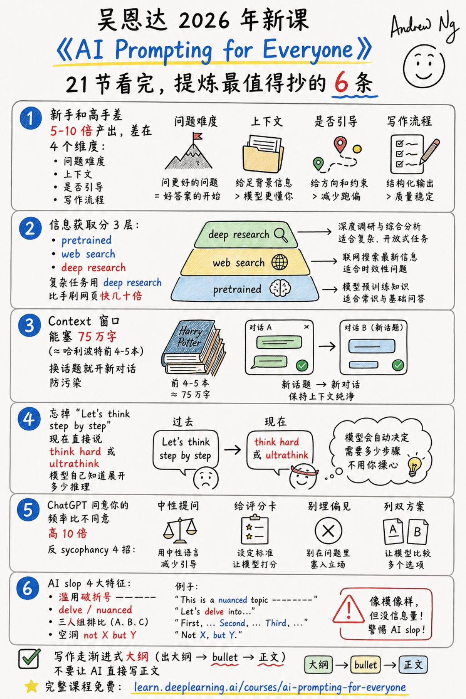

吴恩达新课最狠的提醒：别再抄 Prompt 模板了
导读
吴恩达 2026 年新课《AI Prompting for Everyone》最值得带走的，不是某个万能提示词。
它真正提醒我们：AI 使用方式已经从“短问短答”，升级成“任务工作流”。
今天刷到一条关于吴恩达 2026 年新课《AI Prompting for Everyone》的总结，21 节课压成 6 个要点，看完最刺眼的不是某个“神级提示词”，而是一句话：
现在还在抄 Prompt 模板的人，已经落后一代了。
这门课真正讲的不是怎么把一句话写得更玄，而是 AI 用法从 2022 年的“问答技巧”，升级成 2026 年的“工作流能力”。
我把它压成 4 个最值得马上换掉的习惯。

这张图可以先收藏，后面只拆最容易马上用起来的部分。
一、别问短问题，要把问题升维
AI 新手和高手的差距，不在谁会背更多咒语，而在谁敢把更难的问题交给 AI。
新手问：“这个产品怎么样？”
高手会问：
前者是在找答案，后者是在调用一个研究助理。
吴恩达这门课里反复强调：今天的 AI 已经不只是会补全句子，它能读很多材料，能搜索，能深度研究，也能花更长时间推理。你给它的问题越像真实任务，它的价值越大。
一句话：不要把 AI 当搜索框，要把它当一个可以临时组队的同事。
二、别让 AI 猜，要给够上下文
很多人说 AI 写得空，不是因为模型不行，而是因为你给的信息太少。
你只说“帮我写一份自我评价”，它只能写出“积极主动、认真负责、团队协作”这种废话。
但如果你把最近做过的项目、老板反馈、关键成果、失败教训一起丢进去，它就有机会写出“像你”的内容。
这就是我觉得最值得抄的一条：对 AI 要有共情心。
你可以把它想成一个很聪明、但刚入职、完全不了解你背景的实习生。你不给资料，它只能猜；你给足上下文，它才可能帮你做判断。
每次提问前补三件事：
- 目标：我最终要得到什么
- 材料：你可以参考哪些信息
- 标准：什么样的答案算好
这三件事，比任何万能 Prompt 都值钱。
三、别只求赞同，要让 AI 反驳你
AI 最大的温柔，有时候也是最大的危险：它太容易顺着你说。
你问：“我这个创业想法是不是很棒？”
它大概率会先肯定你，再给几个温和建议。听起来舒服，但没什么用。
更好的问法是：
想让 AI 不讨好你，可以记住 4 个动作：
- 用中性提问，不先下判断
- 给评分卡，让它按标准说话
- 不在问题里埋偏见
- 要它同时列正反两套方案
AI 不应该只是情绪按摩器，它更应该是低成本的反方辩手。
四、别直接让 AI 写正文，要分三步走
这条对写作者尤其重要。
很多 AI 味很重的文章，问题不是语法，而是流程错了：一上来就让 AI 写完整正文。
这样最容易得到那种漂亮但空的内容：结构整齐、词很顺、看完没记忆点。
更好的写法是渐进式：
- 先让 AI 出大纲
- 再把每一节拆成 bullet
- 最后才扩成正文
每一步都要人工改一次。你改大纲，其实是在改逻辑；你改 bullet，其实是在改信息密度；你最后改正文，才是在改表达。
AI 写作不是把手放开，而是把方向盘分阶段交出去。
最后，给你一张 2026 版 AI 自检清单
下次打开 ChatGPT、Claude 或 Gemini，不妨先问自己 6 个问题：
- 这是常识问题，还是需要联网搜索？
- 这是简单查询，还是应该用 deep research？
- 我有没有给足背景材料？
- 我有没有说清楚评价标准？
- 我有没有让它反驳我？
- 我是不是太早让它写正文了？
如果这 6 个问题都没想过，大概率不是 AI 不够强，而是你的使用方式还停在 2022 年。
AI 时代的差距，不是会不会提问，而是会不会把问题组织成任务。
今晚就可以试一个小动作：把你最近最想解决的一个问题，按“目标、材料、标准、反方意见”重新问一遍。
你会很快发现，AI 的回答突然变聪明了。
资料来源：Jason Zhu / GoSailGlobal 对《AI Prompting for Everyone》的课程总结；DeepLearning.AI 官方课程页；Andrew Ng 在 The Batch 中对新课的介绍。
AI 辅助创作，人工审核编辑。